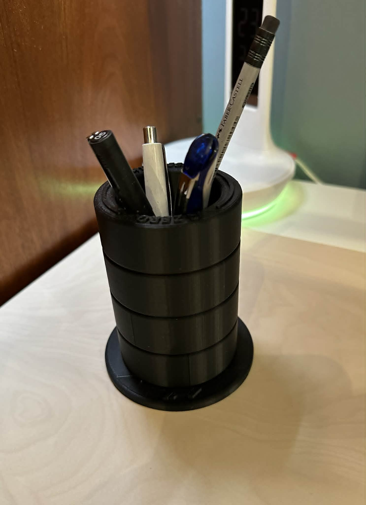
Introduction
Project 3 is about 3D designing, and it is split into two parts.
-
Part 1: 3D printing
In Part 1, Is about designing a small model for 3D printing that would be difficult or impossible to manufacture using subtractive methods. I also design and perform printer tests to determine design rules and constraints before producing the final print. Finally, I summarize what I learned from the process. The printed part can use a maximum of 100 g of plastic (according to the slicer). The available printers are the Prusa i3 MK3+ and the Creality CR-10 MAX. -
Part 2: 3D scanning
In Part 2, I 3D scan an object and document the scanning process and results.
3D printing
Planning and preperation
First, I read the project’s instructions carefully and watched the Verkefni 3 - kynning video regarding the assignment. The main constraint for the 3D printing part is to design a model that cannot be manufactured using subtractive processes (for example milling), meaning the geometry must rely on features that are practical with additive manufacturing.
The figure below illustrates the difference between subtractive and additive manufacturing. Subtractive methods remove material from a larger stock and typically generate significant waste, while additive manufacturing builds the part layer by layer and can create complex internal or enclosed features with much less material waste.
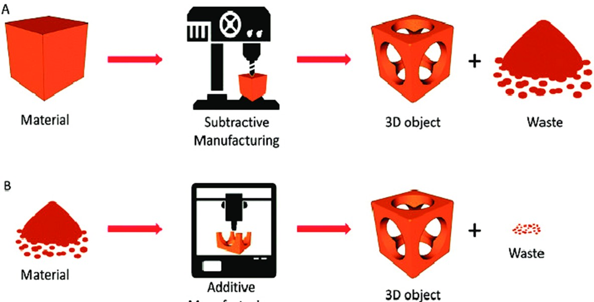
As I am a big Formula 1 fan, I decided to make something F1 related. I got some inspiration from Printables. I wanted to make something small but useful, and found a brilliant idea, that is a F1 tyres as pencil holders, the inspiration I got from AstroStock, this design includeds two stacks of Pirelli tyres, one wet type (blue) and one medium hardness type (yellow). Here below is an image that shows the design from AstroStock.
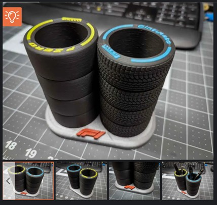
This 3D model is difficult to manufacture using subtractive methods (e.g., milling) because it includes a deep cylindrical cavity and curved sidewall features that are hard to access with cutting tools. Details such as grooves and text on a rounded surface would require complex multi-axis machining and multiple setups. In contrast, 3D printing can create these shapes directly while producing far less material waste.
Design of the F1 – tire pen/pencil holder
For my 3D model I decided to make only one stack of tyres, including a bottom base. I wanted the Pirelli intermediate (green) tyre type:
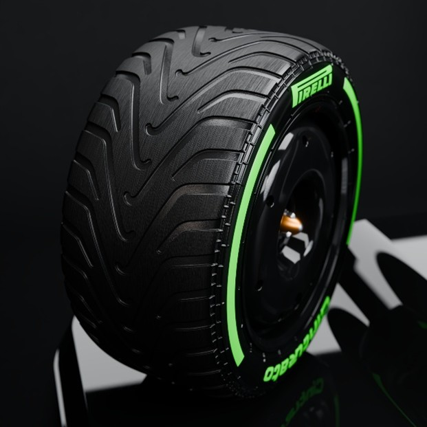
To design the 3D model of the F1 tyre pen/pencil holder, I used Fusion 360. I watched the following video, on How to extrude on a curved surface using Fusion 360 | Designing a tire.
To make the tyre patterns I made a sketch on the tyre surface. It took me a considerable amount of time to create the sketch for the circular sidewall patterns because it contained many small features. During the process I also noticed that the sketch became difficult to modify and reposition once several dimensions were fixed, which made the design less flexible and harder to iterate. Below is an image showing the pattern sketch I initially attempted to create.
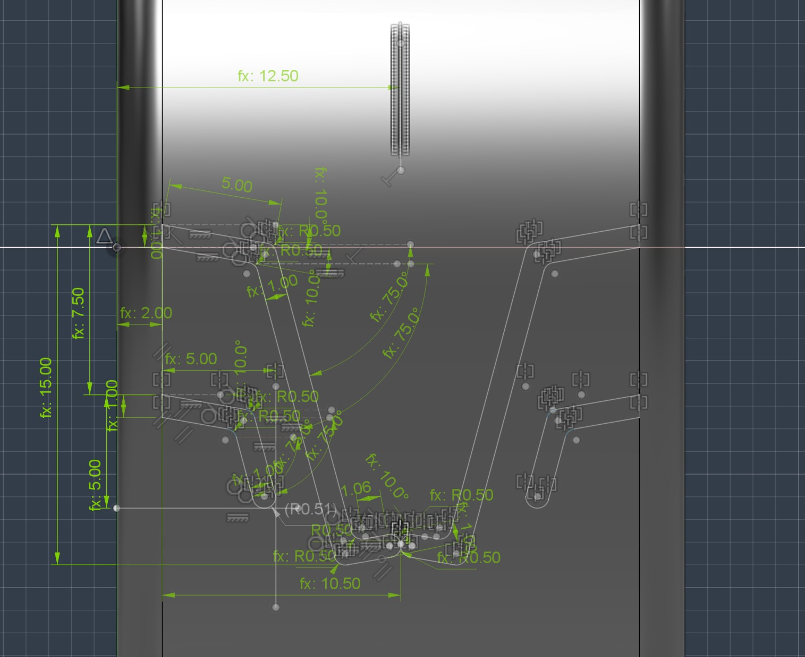
Changing/simplifying the design
Because the original design became overly complex and difficult to modify, I decided to simplify it and model the tyre stack as a Pirelli soft compound tyre with a smooth sidewall surface and no detailed patterns. This change improves manufacturability for FDM 3D printing, a smoother surface reduces the amount of small toolpath segments, decreases the computational load in the slicer, and typically shortens the print time while improving the likelihood of a clean surface finish. The soft compound tyre has a smooth appearance like the reference shown below.
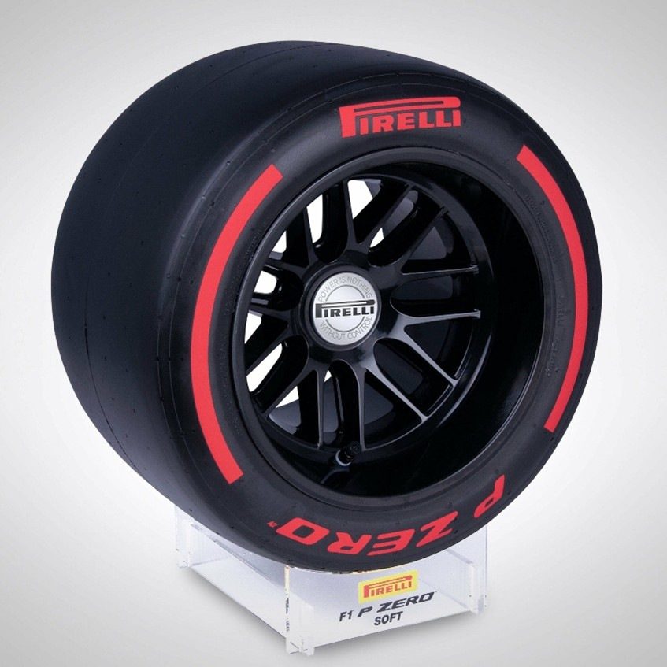
Deciding the parameters: to choose the inner diameter of the pen holder, I first measured the diameter of a typical pen/pencil from my pencil case, which was approximately 8–10 mm. To ensure the holder could store several pens and pencils at once, I set the inner diameter of the holder cavity to 50 mm. The table below shows the main parameters used for the design.
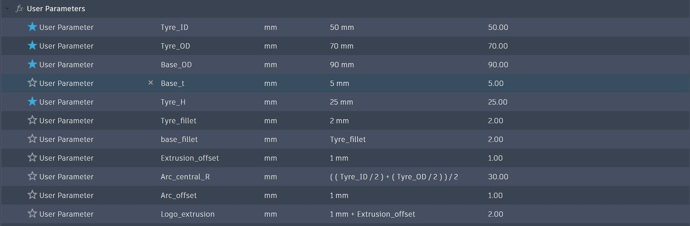
Designing process of the 3D model in Fusion 360
First step of the design, was drawing the main structure, including the tyre stack and the base. The outcome looked like this.
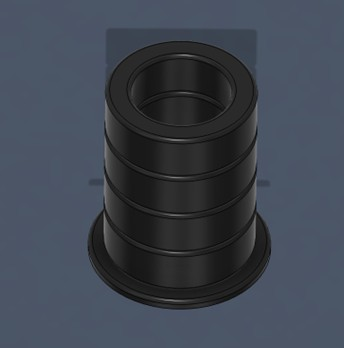
After completing the drawing of the main structure, I did the boss extrusion on the surface of the top tyre with text, and Formula logo on the base surface. For guidance I watched the following video on how to add Extruded text along circular path. Here below is an image showing how added a text on a circular path.
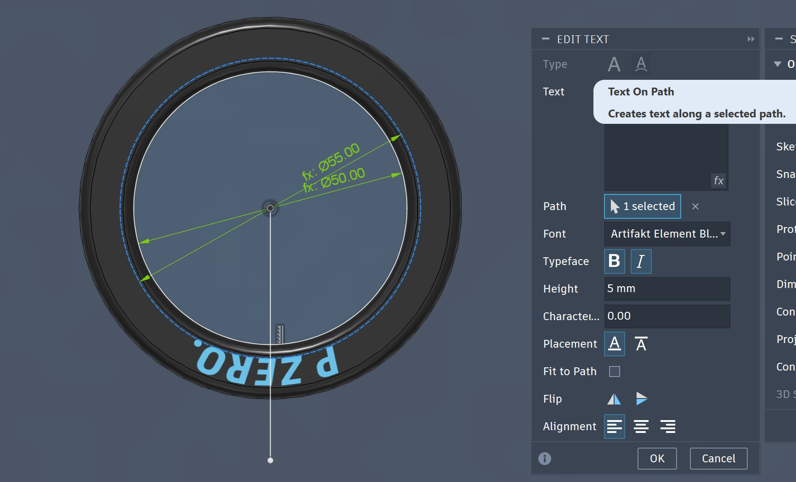
I used 3 point arc tool to create the two arcs along the side of the path, added a concentric relation to the ID tyre circle. The original F1 tyre is made by Pirelli, and has its logo on top. However, I wanted to make a little adjustment, as I swapped out that Pirelli logo for my name initials MTY. I extruded an text “MTY DESIGN” in the same font as the “P ZERO” text, which was in Artifakt Element Black.
Next, was inserting and F1 logo image into Fusion 360 and sketch over it. For guidance on how to do this, I watched the video below.
I searched the logo on google, and saved the image as jpg, the I chose insert canvas in the fusion design tab, and uploaded the jpg image to a plane. I created a sketch on the plane where the logo was, and put a couple of points/dots along the edge of the logo, and then draw lines and three point arcs to connect those points, to create outlines for the image. Below are images showing the sketch outline on the F1 logo. The first image shows the canvas visible in the background, and the second image shows the canvas hidden.
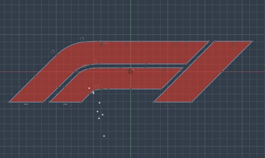
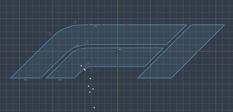
Finally, I extruded the sketch on the bottom base surface.
Full design drawn in Fusion 360
Below is a full view of the completed 3D model of the F1-tyre pencil holder. You can view the underlying sketches by clicking “Open in Fusion” at the top of the viewer panel.
Preparing for 3D printing test
To prepare for the printing tests and to understand how to develop useful design rules and constraints for my model, I first reviewed the reference page provided in the project instructions from FabAcademy: FabAcademy – Week 05 (3D Scanning and Printing) .
Next, I downloaded and installed
PrusaSlicer application
on my computer o I could slice my models and estimate print time and material usage for the Prusa MK3+ printer available in the FabLab, which is the most commonly used 3D printer for our work.
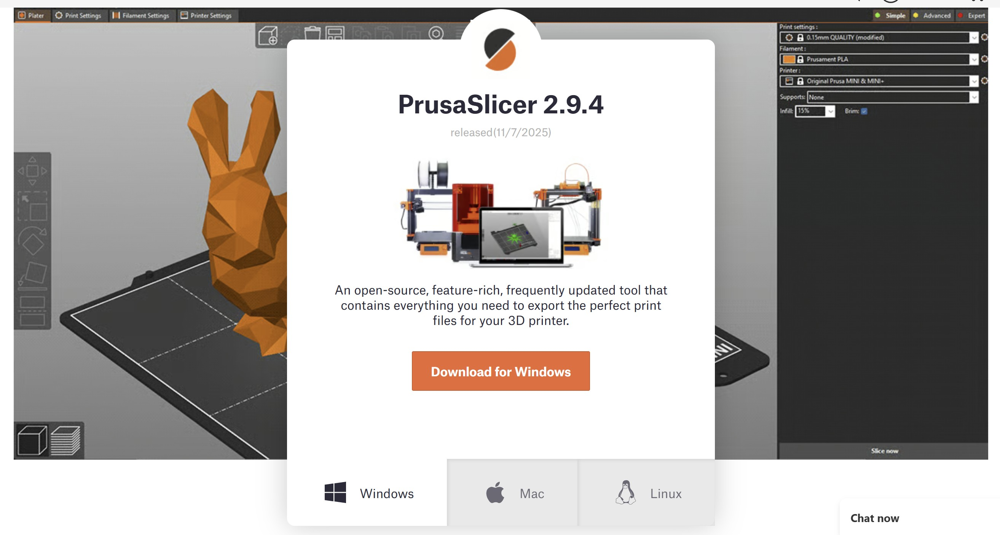
Since my tyre-stack design mainly consists of cylindrical features, fillets, and small extruded/engraved details, I wanted my test prints to focus specifically on these geometries. I also looked for examples of how other students approached testing, and I found a useful idea on Friðrik Valur’s project page, where he used a “mini all-in-one” 3D printer test: Friðrik Valur – Verkefni 3 (3D - printing test) . I downloaded the test model from Thingiverse *MINI* All In One 3D printer test and opened it in Fusion 360 to inspect the included features and understand how similar tests could be applied to my own design.
To generate design rules that are directly relevant to my tyre-stack pen holder, I designed a custom 3D test plate in Fusion 360. Instead of using a generic printer test, I focused only on the features that matter for my final part: cylindrical geometry (diameter accuracy), filleted edges, and extruded/engraved text and logos. This approach reduces unnecessary print time and provides clearer, stronger design constraints that can be applied directly to the final tyre-stack model. A full Fusion 3D view below shows the final test plate design used for printing trials.
Design rules and constraints:
From the three printing tests (cylinder/diameter test, fillet test, and text/logo extrusion test), I defined the key design rules for the final tyre-stack pen holder:
- 1. Diameter / cylinder accuracy (ID compensation): Circular features do not print exactly to their nominal CAD dimensions, so the final inner diameter (ID) must be adjusted using a small compensation based on the measured error to achieve the intended fit.
- 2. Fillets (minimum radius for clean edges): Very small fillet radii can print rough or lose definition, so the tyre-stack uses a minimum fillet radius on all visible edges to improve surface quality and keep the part support-free.
- 3. Text/logo details (minimum readable feature size): The text and F1 logo must use sufficient stroke thickness and emboss/deboss depth so fine details do not merge or disappear during printing.
Performing the 3D printing test
To perform the printing test, I exported the Fusion 360 model as a 3MF file and imported it into PrusaSlicer. For this project we use the Original Prusa i3 MK3S & MK3S+ printer. In PrusaSlicer, I selected the 0.20 mm print profile (layer height), set 15% infill, chose PLA as the filament, and printed without a brim.
Based on the slicer preview, the estimated print time for the test plate is approximately 1 hour and 20 minutes, and the estimated material usage is about 14 g of filament (13.94 g). The selected print settings and the slicer time/material estimates are shown in the images below.
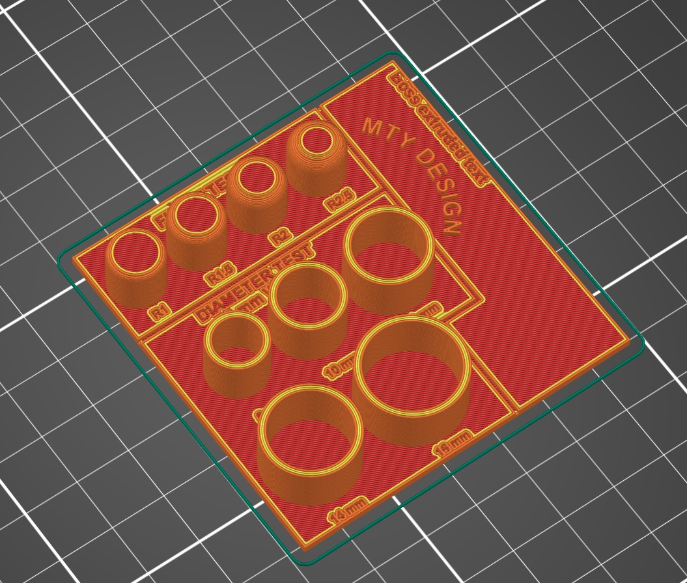 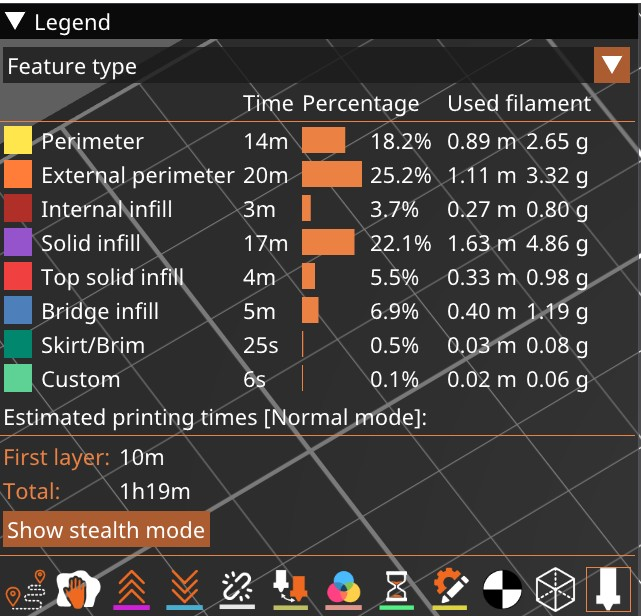 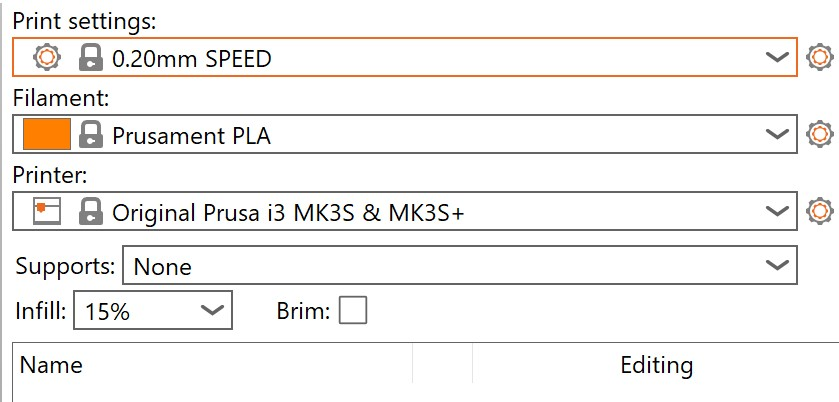 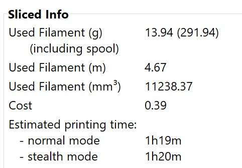
To start the printing, I exported the 3MF file in PrusaSlicer as G-code, and used a USB stick and moved the file there, and connected the USB with a Sim card which was attached to the printer. Below are images and a video showing the printing setup and the 3D printing process for the test plate.
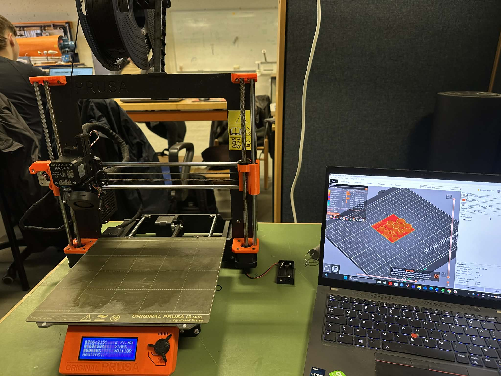 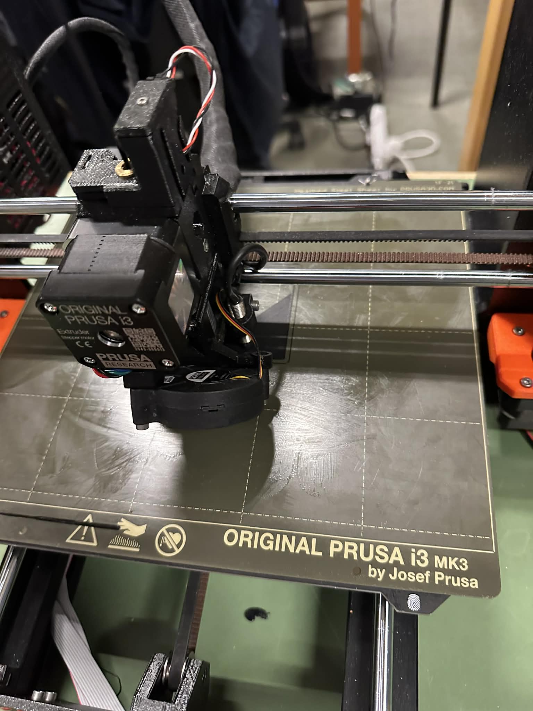
Result of the 3D printing test
Below is the result of the 3D printing test plate. The print worked out well overall and all three tests were successful:
the cylinder/diameter features, the fillet samples, and the extruded “MTY DESIGN” text. However, the engraved title text
did not print clearly, as seen in the images, likely because the text features were too small and/or the engraving depth
was too shallow for the selected layer height. Nonetheless, the main design constraints relevant to my tyre-stack pencil
holder were satisfied, and the test provided useful guidelines for selecting appropriate diameters, minimum fillet sizes,
and readable text/logo feature dimensions for the final print.
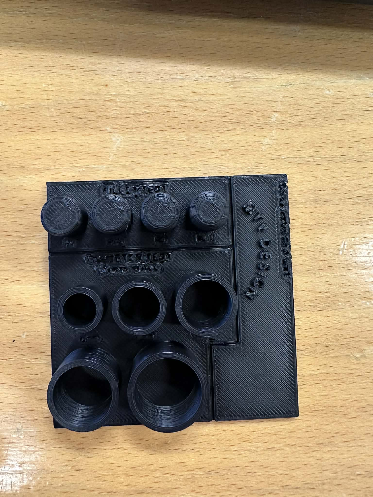 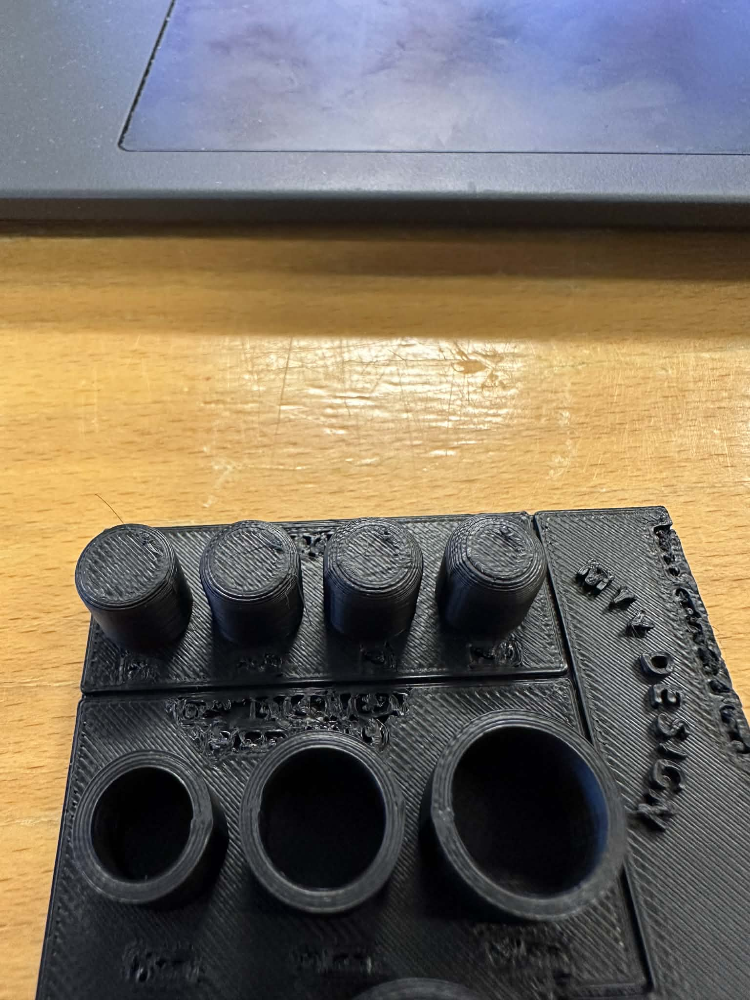 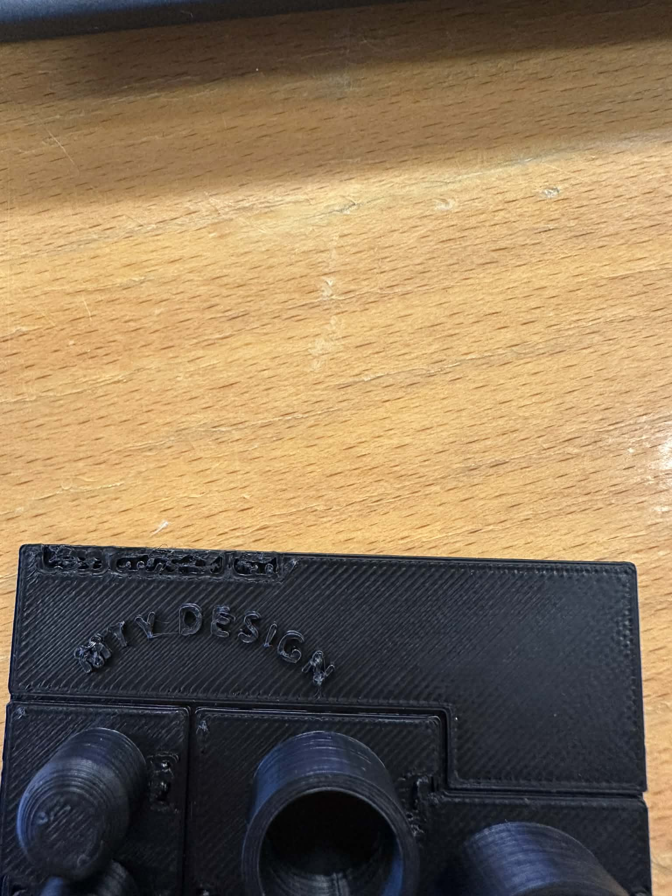
Making adjustments to the 3D model and printing the final version
Since the printing test plate produced good results, only minor changes were made before printing the final model.
To improve visibility and overall appearance, I increased the emboss depth of the F1 logo from 1 mm to 2 mm, and I
increased the text emboss depth from 0.8 mm to 1.0 mm. Below is an image showing the slicer preview of the final 3D model. According to the preview, the estimated print time
is approximately 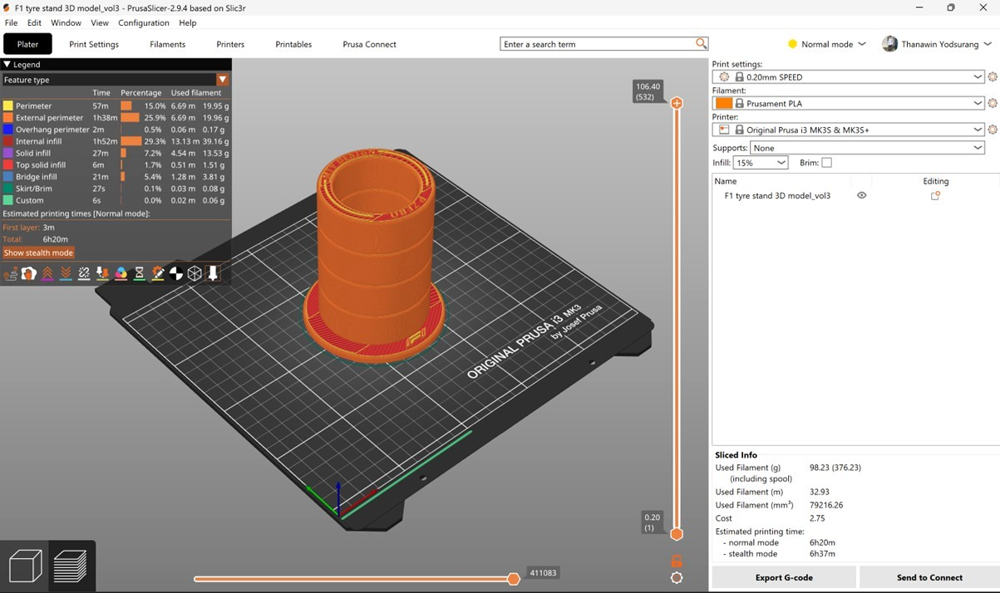6 hours and 20 minutes, and the estimated material usage is about
98 g of filament (98.23 g). This is just under the maximum allowed material limit of
100 g.
Since printing the final 3D model takes a long time, I decided not to start the print in the afternoon while many other students were running shorter test prints or quick model prints. Instead, I started the printer at around 6 PM and let it run overnight.
Final result of the 3D printing model
The final result of the 3D printed F1 tyre-stack pencil holder is shown below. The outcome was very good, the surfaces printed cleanly, the edges are smooth, and the details (logo and text) are clearly visible.
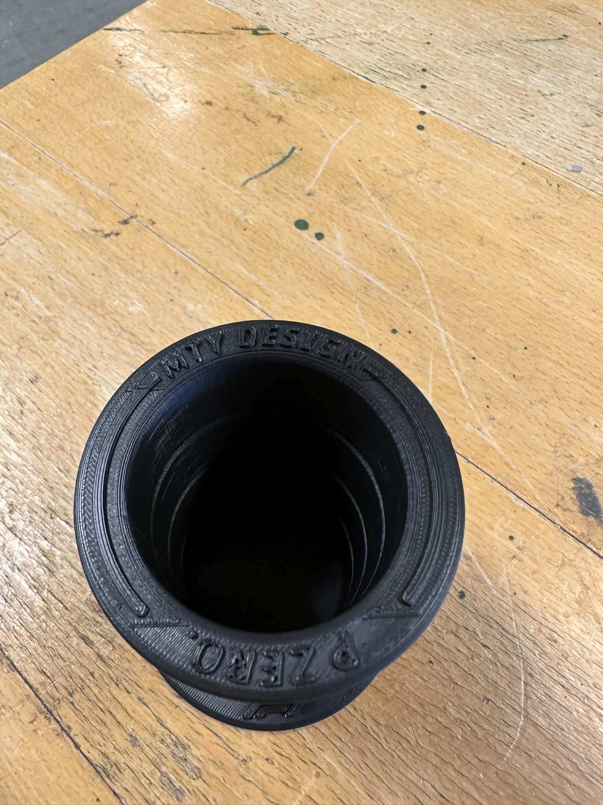
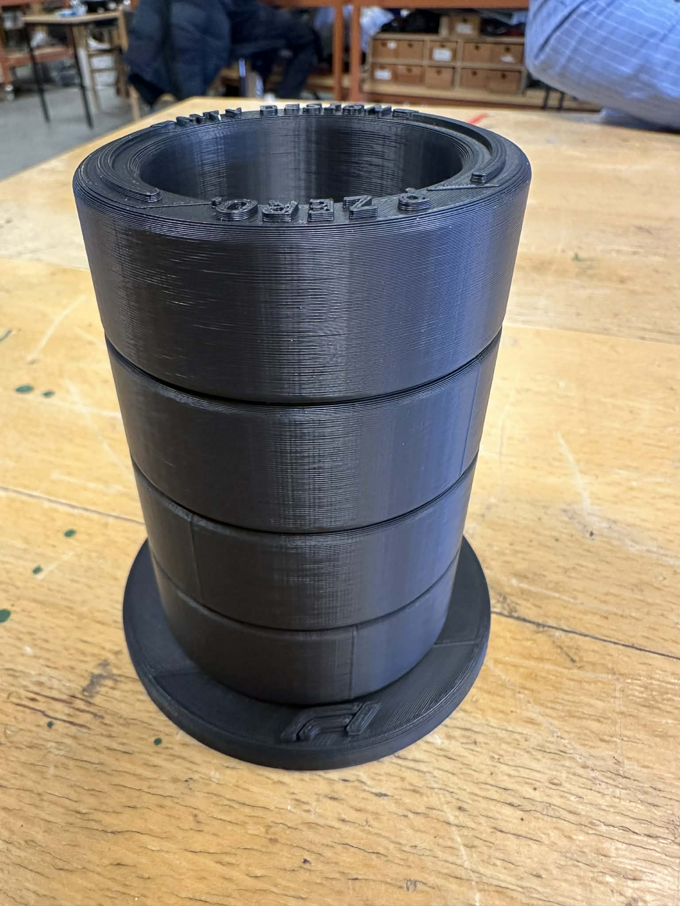
3D scanning
To prepare for the 3D scanning part of the project, I first looked for a suitable mobile scanning application. From reviewing previous student projects, I noticed that several students used Polycam, so I downloaded it from the App Store to my phone. I used Polycam’s free trial in order to export the scans as STL files, which allowed me to import and visualize them in Fusion 360.
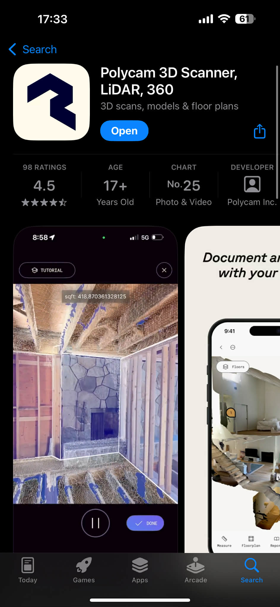 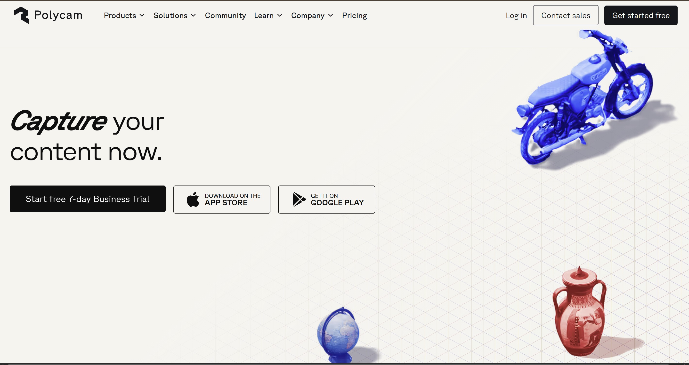
For my scans, I chose two objects: my Rabona deodorant and a small Lionel Messi figurine. I began by scanning the deodorant using the photo-based method with a freely moving camera and poor lighting conditions, which resulted in a low-quality scan. To improve the outcome, I switched to Polycam’s guided capture mode in order to record the object more systematically from all angles. However, the deodorant scan still turned out poorly because the bottle is partially transparent/reflective, which makes photogrammetry difficult and reduces tracking accuracy. The results of the scan of both objects are shown below in a full 3D embedded view.
The body of the Messi figure produced a clear scan, but the head was incomplete, most likely because reflections from the lighting reduced Polycam’s ability to track and reconstruct the surface properly. After that, I scanned an object I expected to produce a cleaner result, a flower pot with an artificial plant. I placed it on a patterned cloth and performed the scan in the living room under decent, even lighting. The results of the scan of the flower pot is shown here below.
The scanning outcome for the flower pot was much better than for the previous two objects. Polycam captured the overall shape of the pot well, although some edges were still not perfectly sharp. Since I was not fully satisfied with the result, I decided to scan one more object. I chose a small Red Bull F1 car model. For this scan, I moved to the house entrance where the lighting was even better, and I placed the car on a white drawer surface.This time the result was strong, the scan captured most of the car’s geometry, including edges, angles, and even smaller details in the livery. However, when viewed in the interactive 3D viewer, the flower pot scan appeared smoother and overall cleaner than the F1 car scan. Therefore, the flower pot produced the best scan result out of the four objects I tested. Below is the final scan result of the Red Bull car.
By clicking the "Toggle display mode" button (located below the "Sign up" button in the 3D viewer),
you can switch between different visualization modes, such as mesh, clay, and the normal textured surface view.
What I learned from the 3D printing and 3D scanning processes
From the 3D printing process, I learned how to design a 3D model and set up an effective workflow, including defining design rules and creating targeted printing tests. I also learned how to evaluate the printed test results and use them to make informed adjustments to the original model. In addition, I maintained consistent documentation throughout the project and improved my HTML skills by adding MP4 videos, embedding YouTube videos, and embedding interactive 3D views of models from Fusion.
In the second part of the project, I learned how to use the Polycam 3D scanning application to capture objects as 3D meshes and embed the interactive 3D viewer from Polycam on my project page.